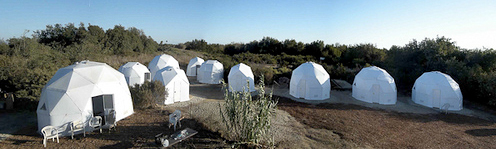
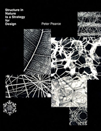
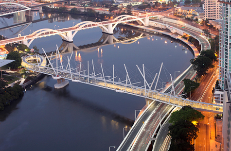
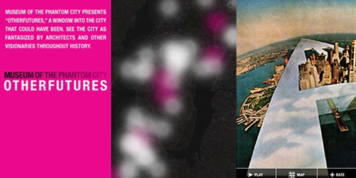
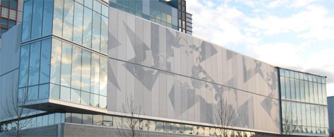

Welcome to Vol. 10 No. 9 of Design Science News, the e-bulletin of the Buckminster Fuller Institute
Design Science News brings you important updates about BFI’s programs and activities as well as news from around the world related to humanity’s option for success and comprehensive design science.Under 30 days left to enter the 2010 Buckminster Fuller Challenge!
Each year a distinguished jury awards a $100,000 prize to support the development and implementation of a strategy that has significant potential to solve humanity’s most pressing problems. Entries are now being accepted and the deadline is midnight, Eastern Time on October 30, 2009.
Visit the Challenge site for full details on how to enter.
BFI Hosts Panel at the 2009 Bioneers Conference
Join the Bioneers for this leading-edge forum in San Rafael, California, October 16-18 (with intensives October 15 and 19). At this premiere environmental conference, social and scientific innovators focus on solutions inspired by nature and human ingenuity. The 2009 Bioneers Conference includes plenary speeches from: Amazonian Chief Almir, Brock Dolman, Kari Fulton, Jack Hidary, Sarah James, Jensine Larsen, Joanna Macy, Mari Margil, Jason McClennan, Michael Pollan, Jerome Ringo, Arturo Sandoval, Dr. Andrew Weil, Lily Yeh and many more!
The BFI session, Friday October 16th 4:30-6:00 pm, will focus on the Buckminster Fuller Challenge. Panelists include BFI executive director Elizabeth Thompson; 2008 Challenge winner John Todd; Greg Watson, 2009 Challenge Juror and Bioneers board member; and Ryan Chin, team leader of the 2009 Challenge winning entry.
Connect with engaged bioneers, who are making a real difference. Learn more and register here.
Prototype Program Installation at DUMBO Arts Festival in Brooklyn


September 25th - BFI's Prototype Program partook in the 13th annual DUMBO Art Under the Bridge Festival in Brooklyn, NY. Our installation transformed one of Fuller’s geodesic diagrams, The 25 Great Circles, into a 12 foot high interactive climbing wall, open to public participants of all ages. Climbing holds were strategically placed at vertices and mid points of the diagram in an attempt to re-interpret the network-like drawing as a mapping not just of geodesic coordinates but of human movement. The festival was heavily attended, and one day alone saw over 140 children and adults partake in climbing upon the wall.
{kind=link}
See more photographs from the installation and festival here.
WorldShelters installs housing for homeless camp in Ventura, California
September 26th, saw dozens of volunteers join up with WorldShelters and the Turning Point Foundation for the installation of 19 temporary housing domes. In took volunteers just one day to assemble the 19 domes, six U-Domes with 200 square feet of space for couples and 13 U-Domes with 120 square feet for singles. Each structure is weather worthy, rated to withstand 80 mph winds, fire retardant, and fully recyclable. They also have locking doors, windows and vents. BFI founder Allegra Fuller Snyder was on hand for the event, expressing upmost support for the project and its mission of effectively housing the homeless.
(Thanks to reader Dick Fischbeck for the lead on the story.)
Read more:
Sheltermovie.wordpress.com
Day of Caring Draws Hundreds of Volunteers
Featured Store Item: Structure in Nature by Peter Pearce
The structural designs that occur in nature, in molecules, in crystals, in living cells, appear in this fully illustrated book as a source of inspiration and study of the design of manmade structures. In particular, the book reveals that when the geometrical modular systems developed by the author are applied to building design, the result is adaptive, structurally sound, and economical environments. Pearce’s work follows in the tradition established by D’Arcy Wentworth Thompson and Konrad Wachsmann, and reflects his earlier close association with Charles Eames and Buckminster Fuller.
“The concepts encompassed in the book should appeal to any lover of geometry, but particularly to those interested in design.” Walter Sullivan, The New York Times.
On sale now for $24.95 in our online store!
Trends & Perspectives
The World’s First Tensegrity Bridge Opens in Brisbane, Australia
October 2009 marked the opening of the first tensegrity based bridge in the world; the Kurilpa bridge of Brisbane, Australia. Measuring 470 meters long, this pedestrial bridge represents the largest tensegirty structure to have ever been built. As with any true tensegrity system, the opposing forces of tension and compression are employed to create a strong yet lightweight structure. In additional to the structural achievements, the bridge is gaining much attention for it's energy efficiency. The bridge is lit at night with an advanced LED lighting systems that is powered by an affixed array of 84 solar panels. The bridge is projected to carry over 36,000 pedestrians and bicyclists each week.
World First Brisbane Bridge Now Open (ABC News)
The World's Largest Solar Powered Foot Bridge (Eco Friend)
Tensegrity (Architecture for Guerillas)
Illuminating Dark Economies
Measuring economic activity from outer space is a new frontier in the struggle to quantify humanity’s impact on the natural world.
Looking down from orbit hundreds or thousands of kilometers above the sunlit surface of the Earth, the signposts of civilization are clearly visible. The vast checkerboard patterns of farmland; the thin traceries of roads, railways, and airplane contrails; Egypt’s Great Pyramid and China’s Great Wall, all are easily seen with the naked eye. But passing into night, the view changes. The signs of humanity fade save for one: light from artificial sources like electric lamps, oil refinery gas flares, and intentionally set fires.
In 1962, when John Glenn became the first American to orbit the Earth, he also clearly demonstrated that lights at night could trace human activity from space. Passing over western Australia, he reported seeing a very bright light on the ground; the citizens of Perth had coordinated to turn on as many lights as possible to signal to Glenn as he flew overhead
Since that time, satellite imagery of nighttime lights has proved useful as a piecemeal method to measure development upon our planet. Static snapshots can reveal stark disparities, like the brightly glowing prosperity of South Korea beneath the darkness of the impoverished, totalitarian north. Gradual changes can be discerned, too, like when the intensity of Soviet-bloc countries’ nighttime lights slowly increased after the USSR’s fall. All such observations to date have been quite crude, constrained by the fact that most of the data comes from one low-resolution source, the Defense Meteorological Satellite Program (DMSP), an aging network of satellites formerly operated by the US Air Force but now controlled by the National Oceanic and Atmospheric Administration (NOAA).
Continue reading here.
Related:
Explore Climate Change in Google Earth
Resources
Sourcemap: a collective tool for transparency and sustainability
When you invite people to an event, buy the ingredients for a recipe, or design the parts of a product, your choices have a significant impact.
Some things have vast supply chains that stretch across the world while others are completely regional. Understanding the reach of our sourcing is fundamental to improving economic, social and environmental conditions.
Sourcemap is a tool for producers, business owners and consumers to understand the impact of supply chains. Our site is a social network where anyone can contribute to a shared understanding of the story behind products. You can simulate the impact of manufacturing, transporting, using and throwing away products using our Life-Cycle Assessment calculator. This web-based tool uses linked data from geological and geographic resources. Each 'Sourcemap' can be used to help market socially- and environmentally- conscious products and to buy carbon offsets. Supply chains published on the site can be embedded in external websites, printed onto product packaging or linked through QR codes readable by camera phones. As the site grows, suppliers will be able to contribute their products to the Sourcemap database, providing a geographic catalogue of materials and products around the world.
SOURCEMAP.ORG
The Museum of the Phantom City
The Museum of the Phantom City uses personal digital devices to transform the city into a living museum. The first tour, Other Futures allows individuals to see speculative proposals for the city of New York. Selected proposals include projects by a wide array of visionary architects and designers, including Rem Koolhaas, Raymond Hood, and Buckminster Fuller. Visit The Phantom City website to download the application and learn more.
Elizabeth Thompson, Executive Director of the Buckminster Fuller Institute, provides perspective on the criteria for the Buckminster Fuller Challenge. This criteria is driven by the principles of Design Science. Video was shot during the 2009 Buckminster Fuller Challenge conferring ceremony in Chicago, IL.
Events
PowerUp NY Rooftop Solar Seminar
Join PowerUp NY Saturday, October 10th, 2009 from 1:00 to 4:00 PM at Habana Outpost in Fort Greene, Brooklyn for their first event. Scientists and solar power experts will speak about why solar power is a promising energy resource for New York State, the effects of CO2 on our atmosphere, and how individuals can take advantage of government incentives to install solar power systems on their rooftops. PowerUp NY will also provide attendees with the opportunity to register with local NABCEP-certified solar power system installers for a rooftop solar site evaluation.
RSVP here.
USM Osher Map Library, Grand Re-Opening Celebration!
Ribbon Cutting and Open House of the new USM Osher Map Library, featuring a Dymaxion Map on it’s facade.
Sunday, October 18, 2009
16 Bedford Street, Portland Maine
Free and Open to the Public
* 2:30 pm - Reception begins in the Cohen Education Center
* 3:00 pm - Ribbon cutting in the Paul Tarbox and Family Arcade
* 3:30 pm - Open house and guided tours of the new facilities and exhibition, with drawing for door prizes at 4:30 p.m.
Current Exhibition:
American Treasures
October 18, 2009 - August 21, 2010
More information about the library and re-opening.
To unsubscribe from this newsletter, send email to this address.
To never receive email from The Buckminster Fuller Institute, send email to this address.
This email is sent from:
The Buckminster Fuller Institute
{domain.address}